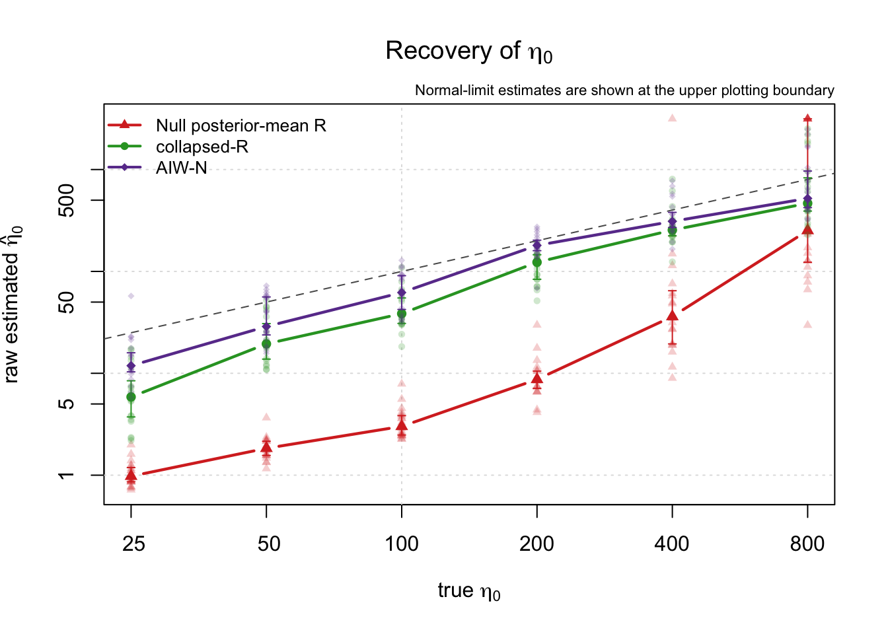
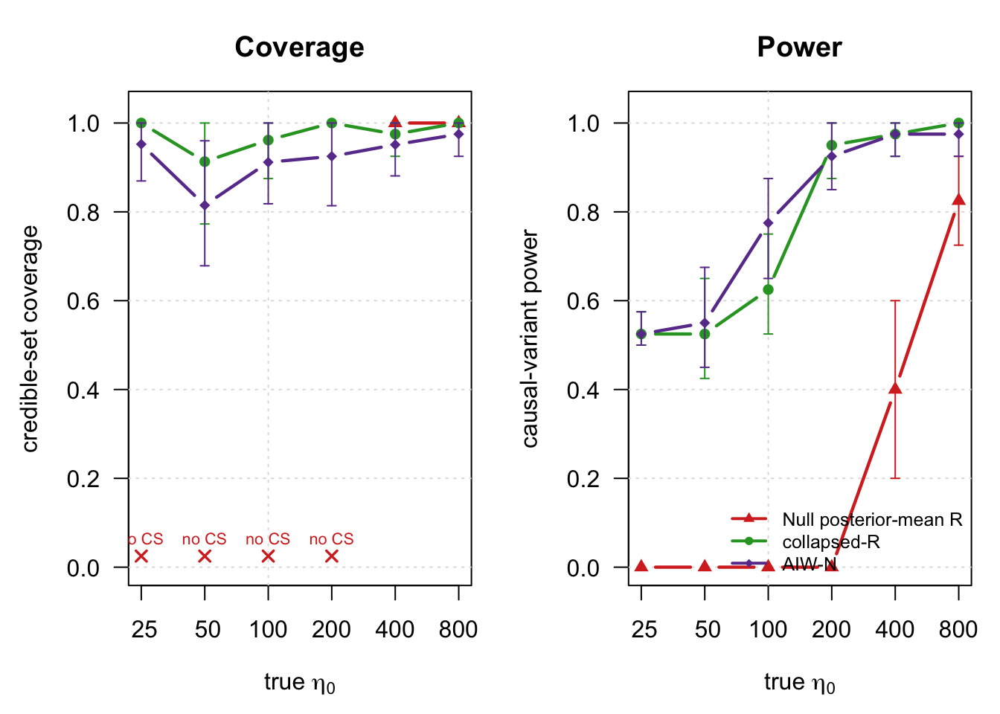

Last updated: 2026-08-20
Checks: 7 0
Knit directory: susie-IW/
This reproducible R Markdown analysis was created with workflowr (version 1.7.2). The Checks tab describes the reproducibility checks that were applied when the results were created. The Past versions tab lists the development history.
Great! Since the R Markdown file has been committed to the Git repository, you know the exact version of the code that produced these results.
Great job! The global environment was empty. Objects defined in the global environment can affect the analysis in your R Markdown file in unknown ways. For reproduciblity it’s best to always run the code in an empty environment.
The command set.seed(20260820) was run prior to running
the code in the R Markdown file. Setting a seed ensures that any results
that rely on randomness, e.g. subsampling or permutations, are
reproducible.
Great job! Recording the operating system, R version, and package versions is critical for reproducibility.
Nice! There were no cached chunks for this analysis, so you can be confident that you successfully produced the results during this run.
Great job! Using relative paths to the files within your workflowr project makes it easier to run your code on other machines.
Great! You are using Git for version control. Tracking code development and connecting the code version to the results is critical for reproducibility.
The results in this page were generated with repository version e430a95. See the Past versions tab to see a history of the changes made to the R Markdown and HTML files.
Note that you need to be careful to ensure that all relevant files for
the analysis have been committed to Git prior to generating the results
(you can use wflow_publish or
wflow_git_commit). workflowr only checks the R Markdown
file, but you know if there are other scripts or data files that it
depends on. Below is the status of the Git repository when the results
were generated:
Ignored files:
Ignored: .DS_Store
Ignored: analysis/.DS_Store
Ignored: experiments/.DS_Store
Ignored: plos-paper/
Note that any generated files, e.g. HTML, png, CSS, etc., are not included in this status report because it is ok for generated content to have uncommitted changes.
These are the previous versions of the repository in which changes were
made to the R Markdown
(analysis/03-compare-null-estimate-R.Rmd) and HTML
(docs/03-compare-null-estimate-R.html) files. If you’ve
configured a remote Git repository (see ?wflow_git_remote),
click on the hyperlinks in the table below to view the files as they
were in that past version.
| File | Version | Author | Date | Message |
|---|---|---|---|---|
| Rmd | e430a95 | dodat-stats | 2026-08-20 | Add SuSiE-IW analyses and experiment results |
This page records the comparison proposed by Peter Carbonetto. The null model first estimates the inverse-Wishart concentration without sparse effects, constructs its posterior-mean LD matrix, and then fits SuSiE-RSS. The simulation compares its concentration estimates, coverage, and power with collapsed-R and AIW-N.
The default experiment contains multiple coalescent simulations and
runs during ordinary workflowr builds. Set
run_analysis: false in the YAML header to skip it.
# Compare Peter Carbonetto's null-posterior LD estimate with collapsed-R and
# AIW-N in the coalescent SuSiE-IW simulation. Run this file from either the
# repository root or code/. It writes two figures, a CSV and
# an RDS file beside this script, and also draws the figures in RStudio.
release_dir <- if (file.exists("01-collapsed-R.R")) {
"."
} else {
"code"
}
source(file.path(release_dir, "01-collapsed-R.R"))
source(file.path(release_dir, "02-AIW-and-AIW-N.R"))
source(file.path(release_dir, "03-SER-fallback-and-plot.R"))
# -------------------------------------------------------------------------
# Settings
# -------------------------------------------------------------------------
seed <- 7L
J <- as.integer(Sys.getenv("NULL_R_J", "500"))
number_of_replications <- as.integer(Sys.getenv("NULL_R_REPS", "20"))
N0 <- 2000L
coalescent_sample_size <- 2000L
N <- 200000L
h2 <- 1e-3
true_lambda <- 1e-3
true_eta0_grid <- c(25, 50, 100, 200, 400, 800)
true_L <- 2L
effect_weights <- c(7, 5)
maximum_fitted_L <- 5L
lambda_grid <- c(1e-5, 1e-4, 1e-3, 2e-3, 4e-3, 6e-3, 8e-3, 1e-2)
# Frozen calibration used by the current operational procedures. Their raw
# eta0 estimates are retained separately and are what the eta0 figure shows.
collapsed_eta0_multiplier <- 1.677
aiwn_eta0_multiplier <- 1.424
eta0_bounds <- c(1e-4, 1e8)
eta0_grid_size <- 121L
bootstrap_replicates <- 1000L
output_stem <- file.path("experiments", "03-null-estimate-R")
stopifnot(
J >= 20L, number_of_replications >= 1L, true_L == 2L,
length(effect_weights) == true_L
)
# -------------------------------------------------------------------------
# 1. One empirical reference-LD matrix from a human coalescent model
# -------------------------------------------------------------------------
simulate_coalescent_R0 <- function(
J, N0, second_population_size = N0, seed = 1L,
chromosome = "chr22", start = 20e6, end = 21e6,
split_time = 10L) {
if (!requireNamespace("reticulate", quietly = TRUE)) {
stop("Install the R package reticulate")
}
if (!nzchar(Sys.getenv("RETICULATE_PYTHON"))) {
python <- Sys.which("python3")
if (nzchar(python)) {
Sys.setenv(RETICULATE_PYTHON = python)
reticulate::use_python(python, required = FALSE)
}
}
stdpopsim <- reticulate::import("stdpopsim")
msprime <- reticulate::import("msprime")
species <- stdpopsim$get_species("HomSap")
contig <- species$get_contig(
chromosome, left = as.integer(start), right = as.integer(end)
)
demography <- msprime$Demography()
demography$add_population(name = "ANC", initial_size = 20000L)
demography$add_population(name = "POP1", initial_size = 100000L)
demography$add_population(name = "POP2", initial_size = 100000L)
demography$add_population_split(
time = as.integer(split_time),
derived = list("POP1", "POP2"), ancestral = "ANC"
)
models <- list(
msprime$DiscreteTimeWrightFisher(duration = 100L),
msprime$StandardCoalescent()
)
tree_sequence <- msprime$sim_ancestry(
samples = reticulate::dict(
POP1 = as.integer(second_population_size),
POP2 = as.integer(N0)
),
demography = demography,
recombination_rate = contig$recombination_map,
model = models,
random_seed = as.integer(seed)
)
tree_sequence <- msprime$sim_mutations(
tree_sequence, rate = 1.29e-8, random_seed = 1L
)
population_ids <- list()
for (population in reticulate::iterate(tree_sequence$populations())) {
population_ids[[population$metadata$name]] <- population$id
}
genotype_haploid <- tree_sequence$genotype_matrix()
to_diploid <- function(sample_ids) {
columns <- as.integer(sample_ids) + 1L
haplotypes <- genotype_haploid[, columns, drop = FALSE]
genotypes <- haplotypes[, seq(1L, ncol(haplotypes), by = 2L)] +
haplotypes[, seq(2L, ncol(haplotypes), by = 2L)]
t(genotypes)
}
genotype_1 <- to_diploid(tree_sequence$samples(
population = as.integer(population_ids$POP1)
))
genotype_0 <- to_diploid(tree_sequence$samples(
population = as.integer(population_ids$POP2)
))
frequency_1 <- colMeans(genotype_1) / 2
frequency_0 <- colMeans(genotype_0) / 2
common <- frequency_1 > 0.05 & frequency_1 < 0.95 &
frequency_0 > 0.05 & frequency_0 < 0.95
genotype_0 <- genotype_0[, common, drop = FALSE]
if (ncol(genotype_0) < J) {
stop("The coalescent region contains fewer than J common variants")
}
set.seed(seed)
first_column <- if (ncol(genotype_0) == J) {
1L
} else {
sample.int(ncol(genotype_0) - J + 1L, 1L)
}
columns <- first_column + seq_len(J) - 1L
R0 <- stats::cor(genotype_0[, columns, drop = FALSE])
R0 <- (R0 + t(R0)) / 2
diag(R0) <- 1
R0
}
# -------------------------------------------------------------------------
# 2. Null-model eta0 profile and posterior-mean R
#
# R ~ IW_J(eta0 Rbar, eta0 + J + 1), v | R ~ N_J(0, R/N).
# Therefore
# v ~ t_{eta0+2}(0, eta0 Rbar / {N(eta0+2)}),
# and E(R | v) = (eta0 Rbar + N v v') / (eta0 + 1).
# -------------------------------------------------------------------------
null_log_marginal_eta0 <- function(eta0, v, Rbar_chol, N) {
if (length(eta0) != 1L || !is.finite(eta0) || eta0 <= 0) {
return(-Inf)
}
J <- length(v)
transformed_v <- backsolve(Rbar_chol, v, transpose = TRUE)
quadratic <- N * sum(transformed_v^2)
log_determinant <- 2 * sum(log(diag(Rbar_chol)))
# For even J this finite sum is more stable than subtracting two lgamma
# values when eta0 is large. The fallback handles arbitrary J.
half_J <- J / 2
if (half_J == floor(half_J)) {
log_gamma_ratio <- sum(log((eta0 + 2) / 2 + seq.int(0, half_J - 1)))
} else {
log_gamma_ratio <- lgamma((eta0 + J + 2) / 2) -
lgamma((eta0 + 2) / 2)
}
log_gamma_ratio + J / 2 * log(N / (pi * eta0)) -
log_determinant / 2 -
(eta0 + J + 2) / 2 * log1p(quadratic / eta0)
}
estimate_null_eta0 <- function(
v, Rbar, N, bounds = c(1e-4, 1e8), grid_size = 121L) {
Rbar_chol <- chol((Rbar + t(Rbar)) / 2)
log_grid <- seq(log(bounds[1L]), log(bounds[2L]), length.out = grid_size)
objective <- function(log_eta0) {
null_log_marginal_eta0(exp(log_eta0), v, Rbar_chol, N)
}
grid_objective <- vapply(log_grid, objective, numeric(1L))
best <- which.max(grid_objective)
lower <- log_grid[max(1L, best - 1L)]
upper <- log_grid[min(length(log_grid), best + 1L)]
refined <- if (lower < upper) {
optimize(objective, interval = c(lower, upper), maximum = TRUE)
} else {
list(maximum = log_grid[best], objective = grid_objective[best])
}
candidates <- data.frame(
log_eta0 = c(log_grid[1L], refined$maximum, tail(log_grid, 1L)),
objective = c(grid_objective[1L], refined$objective,
tail(grid_objective, 1L))
)
selected <- which.max(candidates$objective)
list(
eta0 = exp(candidates$log_eta0[selected]),
log_marginal = candidates$objective[selected],
boundary = selected != 2L,
Rbar_chol = Rbar_chol
)
}
fit_null_estimate_R <- function(
v, R0, N, L = 5L, lambda_grid = NULL,
eta0_bounds = NULL, eta0_grid_size = NULL,
prior_variance = 0.2, max_iter = 500L, tol = 1e-3,
verbose = FALSE) {
if (is.null(lambda_grid)) {
lambda_grid <- c(1e-5, 1e-4, 1e-3, 2e-3, 4e-3, 6e-3, 8e-3, 1e-2)
}
if (is.null(eta0_bounds)) eta0_bounds <- c(1e-4, 1e8)
if (is.null(eta0_grid_size)) eta0_grid_size <- 121L
J <- length(v)
candidate_fits <- vector("list", length(lambda_grid))
profile <- vector("list", length(lambda_grid))
for (i in seq_along(lambda_grid)) {
lambda <- lambda_grid[i]
Rbar <- (1 - lambda) * R0 + lambda * diag(J)
eta_fit <- estimate_null_eta0(
v, Rbar, N, bounds = eta0_bounds, grid_size = eta0_grid_size
)
R_hat <- (eta_fit$eta0 * Rbar + N * tcrossprod(v)) /
(eta_fit$eta0 + 1)
R_hat <- (R_hat + t(R_hat)) / 2
# This is Peter's posterior mean exactly as proposed. In particular, it
# is not converted with cov2cor before the SuSiE-RSS refit.
fit <- fit_susie_rss(
v = v, R = R_hat, N = N, L = L,
prior_variance = prior_variance, max_iter = max_iter, tol = tol
)
susie_elbo <- tail(fit$elbo, 1L)
candidate_fits[[i]] <- fit
profile[[i]] <- data.frame(
lambda = lambda,
eta0 = eta_fit$eta0,
null_log_marginal = eta_fit$log_marginal,
eta0_boundary = eta_fit$boundary,
susie_elbo = susie_elbo,
converged = isTRUE(fit$converged)
)
if (verbose) {
message(sprintf(
"null-R: lambda=%g eta0=%.5g SuSiE ELBO=%.6f",
lambda, eta_fit$eta0, susie_elbo
))
}
}
profile <- do.call(rbind, profile)
best <- which.max(profile$susie_elbo)
result <- candidate_fits[[best]]
result$method <- "Null posterior-mean R"
result$selected_lambda <- profile$lambda[best]
result$raw_eta0 <- profile$eta0[best]
result$eta0 <- profile$eta0[best]
result$eta0_used <- profile$eta0[best]
result$R_hat <- (
result$eta0 * ((1 - result$selected_lambda) * R0 +
result$selected_lambda * diag(J)) + N * tcrossprod(v)
) / (result$eta0 + 1)
result$profile <- profile
class(result) <- unique(c("null_estimate_R", class(result)))
result
}
# -------------------------------------------------------------------------
# 3. SuSiE-IW simulation with two weak-LD causal effects in a 7:5 ratio
# -------------------------------------------------------------------------
choose_weak_ld_variants <- function(R) {
candidates <- unique(as.integer(round(seq(
max(2, 0.08 * nrow(R)), min(nrow(R) - 1, 0.92 * nrow(R)),
length.out = min(250L, nrow(R) - 2L)
))))
minimum_separation <- max(8L, floor(nrow(R) / 12))
first <- candidates[which.min(abs(candidates - round(nrow(R) / 4)))]
available <- candidates[abs(candidates - first) >= minimum_separation]
second <- available[which.min(abs(R[first, available]))]
c(first, second)
}
simulate_dataset <- function(true_eta0, replication) {
simulation_seed <- seed * 10000000L + as.integer(true_eta0) * 100L +
replication
set.seed(simulation_seed)
precision <- stats::rWishart(
1L, df = true_eta0 + J + 1L,
Sigma = Rbar_true_inverse / true_eta0
)[, , 1L]
R <- stats::cov2cor(chol2inv(chol(precision)))
R <- (R + t(R)) / 2
diag(R) <- 1
causal <- choose_weak_ld_variants(R)
beta_scale <- sqrt(
h2 / drop(crossprod(
effect_weights, R[causal, causal, drop = FALSE] %*% effect_weights
))
)
beta <- numeric(J)
beta[causal] <- beta_scale * effect_weights
noise <- as.numeric(t(chol(R)) %*% stats::rnorm(J)) / sqrt(N)
v <- as.numeric(R %*% beta + noise)
list(
v = v, R = R, beta = beta, causal = causal,
causal_LD = R[causal[1L], causal[2L]],
expected_z = sqrt(N) * as.numeric(R[causal, , drop = FALSE] %*% beta)
)
}
evaluate_fit <- function(fit, causal) {
sets <- susie_get_reported_cs(fit)
covered <- vapply(causal, function(j) {
any(vapply(sets, function(set) j %in% set, logical(1L)))
}, logical(1L))
true_sets <- sum(vapply(sets, function(set) any(set %in% causal), logical(1L)))
data.frame(
estimated_eta0 = if (!is.null(fit$raw_eta0)) {
fit$raw_eta0
} else {
fit$selected_raw_eta0
},
eta0_used = if (!is.null(fit$eta0_used)) fit$eta0_used else fit$eta0,
selected_lambda = fit$selected_lambda,
reported_L = length(sets),
true_sets = true_sets,
false_sets = length(sets) - true_sets,
causal_power = mean(covered),
all_causal_covered = all(covered),
fallback = isTRUE(fit$postprocess$fallback_used),
converged = isTRUE(fit$converged)
)
}
if (!identical(Sys.getenv("NULL_R_FUNCTIONS_ONLY"), "1")) {
method_levels <- c("Null posterior-mean R", "collapsed-R", "AIW-N")
reuse_results <- identical(Sys.getenv("NULL_R_REUSE_RESULTS"), "1")
if (reuse_results) {
saved_results <- readRDS(paste0(output_stem, ".rds"))
if (!identical(as.numeric(saved_results$settings$true_eta0_grid),
as.numeric(true_eta0_grid)) ||
saved_results$settings$J != J ||
saved_results$settings$replications != number_of_replications) {
stop("Saved results do not match the current eta0 grid, J and replications")
}
message("Reusing completed results and regenerating summaries and figures")
R0 <- saved_results$R0
results <- saved_results$results
} else {
message("Generating the coalescent reference LD matrix")
R0 <- simulate_coalescent_R0(
J = J, N0 = N0, second_population_size = coalescent_sample_size,
seed = seed
)
Rbar_true <- (1 - true_lambda) * R0 + true_lambda * diag(J)
Rbar_true_inverse <- chol2inv(chol(Rbar_true))
result_rows <- vector(
"list", length(true_eta0_grid) * number_of_replications * 3L
)
row_index <- 0L
for (true_eta0 in true_eta0_grid) {
for (replication in seq_len(number_of_replications)) {
message(sprintf(
"true eta0=%s, replication %d/%d",
format(true_eta0, scientific = FALSE), replication,
number_of_replications
))
simulation <- simulate_dataset(true_eta0, replication)
fits <- list(
"Null posterior-mean R" = fit_null_estimate_R(
v = simulation$v, R0 = R0, N = N, L = maximum_fitted_L,
lambda_grid = lambda_grid, verbose = FALSE
),
"collapsed-R" = susie_iw(
v = simulation$v, R0 = R0, N = N, L = maximum_fitted_L,
lambda_grid = lambda_grid,
eta0_multiplier = collapsed_eta0_multiplier,
scaled_prior_variance = 0.2, estimate_prior_variance = TRUE,
coverage = 0.95, min_abs_corr = 0.5,
ser_fallback = TRUE, partition_ser = FALSE,
max_iter = 200L, tol = 1e-4, verbose = FALSE
),
"AIW-N" = suppressMessages(susie_aiw(
v = simulation$v, R0 = R0, N = N, L = maximum_fitted_L,
approximation = "N", lambda_grid = lambda_grid,
eta0_multiplier = aiwn_eta0_multiplier,
scaled_prior_variance = 0.2, estimate_prior_variance = TRUE,
coverage = 0.95, min_abs_corr = 0.5,
ser_fallback = TRUE, partition_ser = FALSE,
max_iter = 500L, tol = 1e-3, verbose = FALSE
))
)
for (method in names(fits)) {
row_index <- row_index + 1L
row <- evaluate_fit(fits[[method]], simulation$causal)
row$true_eta0 <- true_eta0
row$replication <- replication
row$method <- method
row$causal_LD <- simulation$causal_LD
row$expected_z_stronger <- max(abs(simulation$expected_z))
row$expected_z_weaker <- min(abs(simulation$expected_z))
result_rows[[row_index]] <- row
}
}
}
results <- do.call(rbind, result_rows)
}
results$method <- factor(results$method, levels = method_levels)
# -------------------------------------------------------------------------
# 4. Summaries and figures
# -------------------------------------------------------------------------
summarize_cell <- function(data, bootstrap_replicates = 1000L) {
metrics <- function(x) c(
coverage = if (sum(x$reported_L) > 0) {
sum(x$true_sets) / sum(x$reported_L)
} else {
NA_real_
},
power = mean(x$causal_power)
)
estimate <- metrics(data)
bootstrap <- replicate(bootstrap_replicates, {
metrics(data[sample.int(nrow(data), nrow(data), replace = TRUE), ])
})
interval <- function(values, probability) {
values <- values[is.finite(values)]
if (length(values)) {
unname(quantile(values, probability, names = FALSE))
} else {
NA_real_
}
}
data.frame(
coverage = estimate["coverage"],
coverage_lower = interval(bootstrap["coverage", ], 0.025),
coverage_upper = interval(bootstrap["coverage", ], 0.975),
power = estimate["power"],
power_lower = interval(bootstrap["power", ], 0.025),
power_upper = interval(bootstrap["power", ], 0.975)
)
}
summary_rows <- list()
summary_index <- 0L
for (eta0 in true_eta0_grid) {
for (method in method_levels) {
summary_index <- summary_index + 1L
cell <- results[
results$true_eta0 == eta0 & as.character(results$method) == method,
]
set.seed(900000L + as.integer(eta0) + match(method, method_levels))
row <- summarize_cell(cell, bootstrap_replicates)
row$true_eta0 <- eta0
row$method <- method
row$median_estimated_eta0 <- median(cell$estimated_eta0)
row$eta0_q25 <- unname(quantile(cell$estimated_eta0, 0.25))
row$eta0_q75 <- unname(quantile(cell$estimated_eta0, 0.75))
row$mean_reported_L <- mean(cell$reported_L)
row$mean_false_sets <- mean(cell$false_sets)
row$fallback_frequency <- mean(cell$fallback)
summary_rows[[summary_index]] <- row
}
}
summary_table <- do.call(rbind, summary_rows)
summary_table$method <- factor(summary_table$method, levels = method_levels)
method_colors <- c("#D73027", "#2CA02C", "#6A3D9A")
method_shapes <- c(17, 16, 18)
names(method_colors) <- names(method_shapes) <- method_levels
draw_eta0 <- function() {
normal_limit <- is.infinite(results$estimated_eta0) |
results$estimated_eta0 >= 0.99 * eta0_bounds[2L]
finite_eta0 <- results$estimated_eta0[
is.finite(results$estimated_eta0) & !normal_limit
]
display_ceiling <- max(
2 * max(true_eta0_grid), 1.25 * max(finite_eta0)
)
display_eta0 <- results$estimated_eta0
display_eta0[normal_limit] <- display_ceiling
limits <- range(c(true_eta0_grid, finite_eta0, display_eta0))
plot(
true_eta0_grid, true_eta0_grid, type = "n", log = "xy",
xlim = range(true_eta0_grid), ylim = limits,
xlab = expression("true " * eta[0]),
ylab = expression("raw estimated " * hat(eta)[0]),
main = expression("Recovery of " * eta[0]), xaxt = "n"
)
axis(1, at = true_eta0_grid,
labels = format(true_eta0_grid, big.mark = ",", scientific = FALSE))
grid(col = "grey88", lty = 3)
abline(0, 1, lty = 2, col = "grey35")
for (method in method_levels) {
individual <- results[as.character(results$method) == method, ]
individual_eta0 <- pmin(individual$estimated_eta0, display_ceiling)
points(
individual$true_eta0, individual_eta0,
pch = method_shapes[method], col = grDevices::adjustcolor(
method_colors[method], alpha.f = 0.22
), cex = 0.72
)
medians <- summary_table[as.character(summary_table$method) == method, ]
median_eta0 <- pmin(medians$median_estimated_eta0, display_ceiling)
eta0_q25 <- pmin(medians$eta0_q25, display_ceiling)
eta0_q75 <- pmin(medians$eta0_q75, display_ceiling)
lines(
medians$true_eta0, median_eta0,
type = "b", pch = method_shapes[method], lwd = 2.2,
col = method_colors[method]
)
show_interval <- is.finite(eta0_q25) & is.finite(eta0_q75) &
eta0_q25 < eta0_q75
if (any(show_interval)) {
arrows(
medians$true_eta0[show_interval], eta0_q25[show_interval],
medians$true_eta0[show_interval], eta0_q75[show_interval],
angle = 90, code = 3, length = 0.03, col = method_colors[method]
)
}
}
legend(
"topleft", legend = method_levels, col = method_colors,
pch = method_shapes, lwd = 2, bty = "n", cex = 0.83
)
if (any(normal_limit)) {
mtext("Normal-limit estimates are shown at the upper plotting boundary",
side = 3, line = 0.15, cex = 0.7, adj = 1)
}
}
draw_performance <- function() {
old_par <- par(no.readonly = TRUE)
on.exit(par(old_par), add = TRUE)
par(mfrow = c(1, 2), mar = c(4.5, 4.5, 3.2, 1), las = 1)
for (metric in c("coverage", "power")) {
plot(
true_eta0_grid, rep(NA_real_, length(true_eta0_grid)),
type = "n", log = "x", ylim = c(0, 1.03), xaxt = "n",
xlab = expression("true " * eta[0]),
ylab = if (metric == "coverage") {
"credible-set coverage"
} else {
"causal-variant power"
},
main = if (metric == "coverage") "Coverage" else "Power"
)
axis(1, at = true_eta0_grid,
labels = format(true_eta0_grid, big.mark = ",", scientific = FALSE))
grid(col = "grey88", lty = 3)
for (method in method_levels) {
data <- summary_table[as.character(summary_table$method) == method, ]
lines(
data$true_eta0, data[[metric]], type = "b",
pch = method_shapes[method], lwd = 2.2, col = method_colors[method]
)
lower <- data[[paste0(metric, "_lower")]]
upper <- data[[paste0(metric, "_upper")]]
show_interval <- is.finite(lower) & is.finite(upper) & lower < upper
if (any(show_interval)) {
arrows(
data$true_eta0[show_interval], lower[show_interval],
data$true_eta0[show_interval], upper[show_interval],
angle = 90, code = 3, length = 0.03, col = method_colors[method]
)
}
}
if (metric == "coverage") {
null_summary <- summary_table[
as.character(summary_table$method) == "Null posterior-mean R",
]
no_sets <- !is.finite(null_summary$coverage)
if (any(no_sets)) {
points(
null_summary$true_eta0[no_sets], rep(0.025, sum(no_sets)),
pch = 4, lwd = 1.7, col = method_colors["Null posterior-mean R"]
)
text(
null_summary$true_eta0[no_sets], rep(0.065, sum(no_sets)),
labels = "no CS", cex = 0.68,
col = method_colors["Null posterior-mean R"]
)
}
}
if (metric == "power") {
legend(
"bottomright", legend = method_levels, col = method_colors,
pch = method_shapes, lwd = 2, bty = "n", cex = 0.78
)
}
}
}
write_figure <- function(filename, width, height, draw) {
grDevices::png(
paste0(filename, ".png"), width = width * 180,
height = height * 180, res = 180
)
draw()
grDevices::dev.off()
grDevices::pdf(paste0(filename, ".pdf"), width = width, height = height)
draw()
grDevices::dev.off()
}
write_figure(paste0(output_stem, "-estimated-eta0"), 6.5, 5.3, draw_eta0)
write_figure(paste0(output_stem, "-coverage-power"), 10, 4.7,
draw_performance)
utils::write.csv(results, paste0(output_stem, "-results.csv"), row.names = FALSE)
utils::write.csv(
summary_table, paste0(output_stem, "-summary.csv"), row.names = FALSE
)
saveRDS(
list(
settings = list(
seed = seed, J = J, replications = number_of_replications,
N0 = N0, N = N, h2 = h2, true_lambda = true_lambda,
true_eta0_grid = true_eta0_grid, true_L = true_L,
effect_weights = effect_weights, lambda_grid = lambda_grid,
collapsed_eta0_multiplier = collapsed_eta0_multiplier,
aiwn_eta0_multiplier = aiwn_eta0_multiplier
),
R0 = R0, results = results, summary = summary_table
),
paste0(output_stem, ".rds")
)
cat("\nSummary\n")
print(summary_table, row.names = FALSE, digits = 4)
cat("\nMedian absolute causal LD:", median(abs(results$causal_LD)), "\n")
cat("Expected |z| range:",
range(c(results$expected_z_weaker, results$expected_z_stronger)), "\n")
draw_eta0()
draw_performance()
}
Summary
coverage coverage_lower coverage_upper power power_lower power_upper true_eta0
NA NA NA 0.000 0.000 0.000 25
1.0000 1.0000 1.00 0.525 0.500 0.575 25
0.9524 0.8696 1.00 0.525 0.500 0.575 25
NA NA NA 0.000 0.000 0.000 50
0.9130 0.7727 1.00 0.525 0.425 0.650 50
0.8148 0.6786 0.96 0.550 0.450 0.675 50
NA NA NA 0.000 0.000 0.000 100
0.9615 0.8750 1.00 0.625 0.525 0.750 100
0.9118 0.8182 1.00 0.775 0.650 0.875 100
NA NA NA 0.000 0.000 0.000 200
1.0000 1.0000 1.00 0.950 0.875 1.000 200
0.9250 0.8138 1.00 0.925 0.850 1.000 200
1.0000 1.0000 1.00 0.400 0.200 0.600 400
0.9750 0.9250 1.00 0.975 0.925 1.000 400
0.9512 0.8810 1.00 0.975 0.925 1.000 400
1.0000 1.0000 1.00 0.825 0.725 0.925 800
1.0000 1.0000 1.00 1.000 1.000 1.000 800
0.9750 0.9250 1.00 0.975 0.925 1.000 800
method median_estimated_eta0 eta0_q25 eta0_q75 mean_reported_L
Null posterior-mean R 0.9773 0.8613 1.187e+00 0.00
collapsed-R 5.8590 3.7305 8.442e+00 1.00
AIW-N 11.8756 10.3313 1.590e+01 1.05
Null posterior-mean R 1.8356 1.5632 2.156e+00 0.00
collapsed-R 19.4467 13.7725 3.076e+01 1.15
AIW-N 28.7880 23.7978 5.615e+01 1.35
Null posterior-mean R 3.0139 2.4809 3.843e+00 0.00
collapsed-R 38.5112 30.8670 5.488e+01 1.30
AIW-N 62.0218 42.3262 9.076e+01 1.70
Null posterior-mean R 8.7076 7.1130 1.052e+01 0.00
collapsed-R 123.0293 83.6982 1.457e+02 1.90
AIW-N 180.0105 159.7127 2.025e+02 2.00
Null posterior-mean R 36.0523 19.4340 6.463e+01 0.60
collapsed-R 254.5737 223.7227 3.123e+02 2.00
AIW-N 309.7009 269.9778 3.797e+02 2.05
Null posterior-mean R 251.7108 123.0402 1.000e+08 1.55
collapsed-R 466.3841 391.0372 8.291e+02 2.00
AIW-N 521.0979 423.0133 9.672e+02 2.00
mean_false_sets fallback_frequency
0.00 0.00
0.00 1.00
0.05 0.95
0.00 0.00
0.10 0.85
0.25 0.65
0.00 0.00
0.05 0.70
0.15 0.30
0.00 0.00
0.00 0.10
0.15 0.05
0.00 0.00
0.05 0.00
0.10 0.00
0.00 0.00
0.00 0.00
0.05 0.00
Median absolute causal LD: 0.0008277233
Expected |z| range: 8.176412 11.51944 

sessionInfo()R version 4.5.2 (2025-10-31)
Platform: aarch64-apple-darwin20
Running under: macOS Tahoe 26.5.1
Matrix products: default
BLAS: /System/Library/Frameworks/Accelerate.framework/Versions/A/Frameworks/vecLib.framework/Versions/A/libBLAS.dylib
LAPACK: /Library/Frameworks/R.framework/Versions/4.5-arm64/Resources/lib/libRlapack.dylib; LAPACK version 3.12.1
locale:
[1] C.UTF-8/C.UTF-8/C.UTF-8/C/C.UTF-8/C.UTF-8
time zone: America/Chicago
tzcode source: internal
attached base packages:
[1] stats graphics grDevices utils datasets methods base
other attached packages:
[1] workflowr_1.7.2
loaded via a namespace (and not attached):
[1] generics_0.1.4 sass_0.4.10 stringi_1.8.7 lattice_0.22-7
[5] digest_0.6.39 magrittr_2.0.4 evaluate_1.0.5 grid_4.5.2
[9] RColorBrewer_1.1-3 fastmap_1.2.0 plyr_1.8.9 rprojroot_2.1.1
[13] jsonlite_2.0.0 Matrix_1.7-4 processx_3.8.6 whisker_0.4.1
[17] reshape_0.8.10 mixsqp_0.3-54 ps_1.9.1 promises_1.5.0
[21] httr_1.4.8 scales_1.4.0 jquerylib_0.1.4 cli_3.6.6
[25] rlang_1.3.0 zigg_0.0.2 crayon_1.5.3 susieR_0.16.6
[29] cachem_1.1.0 yaml_2.3.12 otel_0.2.0 tools_4.5.2
[33] dplyr_1.2.0 ggplot2_4.0.3 httpuv_1.6.17 Rfast_2.1.5.2
[37] reticulate_1.46.0 vctrs_0.7.3 R6_2.6.1 png_0.1-9
[41] matrixStats_1.5.0 lifecycle_1.0.5 git2r_0.36.2 stringr_1.6.0
[45] fs_2.1.0 irlba_2.3.7 pkgconfig_2.0.3 callr_3.8.0
[49] RcppParallel_6.2.0 pillar_1.11.1 bslib_0.10.0 later_1.4.8
[53] gtable_0.3.6 glue_1.8.1 Rcpp_1.1.2 tidyselect_1.2.1
[57] xfun_0.56 tibble_3.3.1 rstudioapi_0.18.0 knitr_1.51
[61] farver_2.1.2 htmltools_0.5.9 rmarkdown_2.30 compiler_4.5.2
[65] S7_0.2.2 getPass_0.2-4